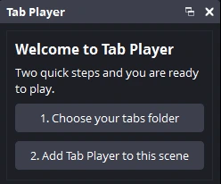
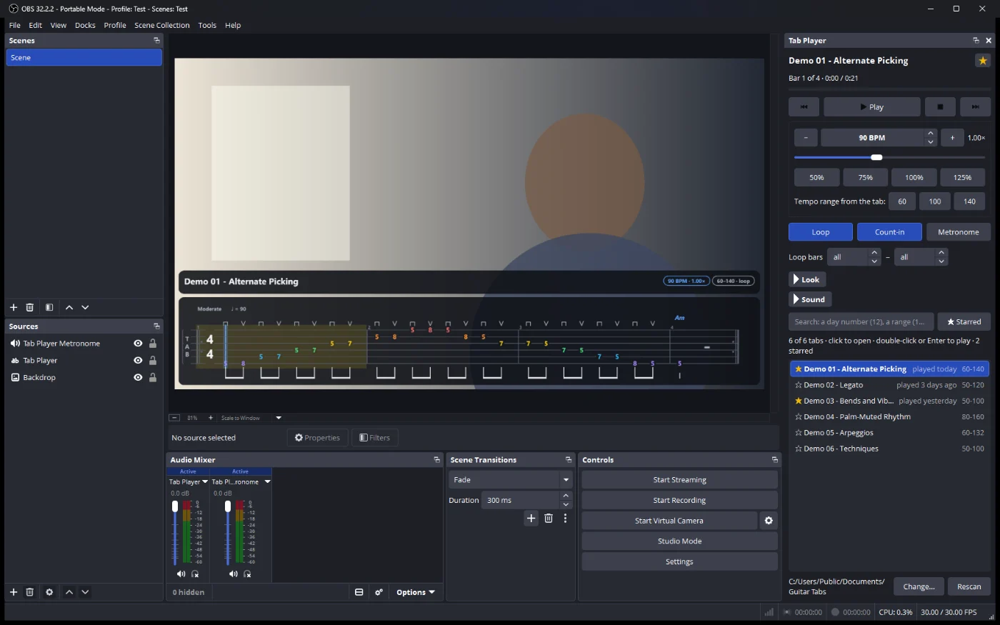
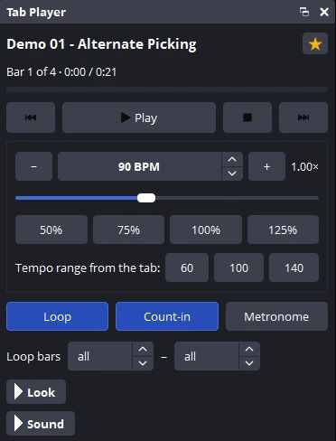
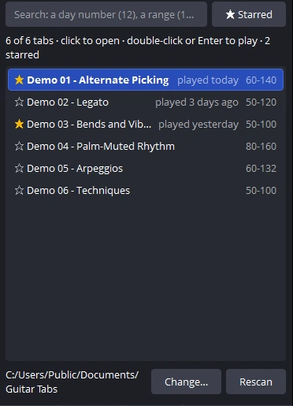

Getting started
From download to a tab scrolling under your camera in about five minutes. You need OBS Studio 30 or newer and, if you have them, some Guitar Pro files. If you don't, the download comes with six practice tabs.
1Install the plugin
Close OBS first. Then open the latest release and download the one file for your computer:
Windows 10 or 11
Download the file ending in windows-x64-setup.exe and double-click it. If Windows shows “Windows protected your PC”, choose More info, then Run anyway. Click through the setup; it doesn't need an administrator password.
Mac
Download the file ending in macos-universal.zip and double-click it to unzip. Control-click Install.command, choose Open, then Open again. A window opens, copies the plugin and says when it's done. The Mac version is new, so please tell us how it goes.
Linux
Download the file ending in linux-x86_64.tar.gz, unpack it, and run ./install.sh in that folder. On Ubuntu or Debian you can install the .deb instead. The Flatpak version of OBS can't load it.
Windows and macOS ask because the plugin isn't signed with a paid certificate. It's free and open source, and every download is listed with its checksum on the release page.
2Choose your tabs folder
Start OBS. The first time, a Tab Player panel opens on the right with two buttons. Click 1. Choose your tabs folder and pick the folder where you keep your Guitar Pro files. Tabs in folders inside it are found too.
It opens .gp, .gpx, .gp5, .gp4 and .gp3 files. You can also drag tab files onto the panel.
No tabs yet? Pick the practice tabs that came with the download:
- Windows
C:\ProgramData\obs-studio\plugins\obs-tab-player\demo-tabs
Paste this into the address bar of the folder window, because ProgramData is hidden. With the ZIP instead of the setup, it's thedemo-tabsfolder next to Install.cmd.- Mac and Linux (.tar.gz)
- The
demo-tabsfolder next to the installer you unpacked. - Linux (.deb)
/usr/share/doc/obs-tab-player/demo-tabs

3Add it to your scene
Click 2. Add Tab Player to this scene. The tab appears at the bottom of the scene that's showing, over your camera.
To move it or change its size, drag it in the OBS preview, or drag its red corners, like any other source.

4Play and practice
Pick a tab in the list and press Play. The line of tab scrolls and the part plays, in OBS and in your recording or stream.
- Tempo
- Press − or + to go 5% slower or faster, or click 50%, 75%, 100% or 125%. If the tab gives a practice range, its tempos have their own buttons.
- Loop
- Plays the tab again and again until you press Stop. To loop only the hard part, set the first and last bar under Loop bars.
- Count-in
- One bar of clicks before the tab starts, so you have time to get your hands ready.
- Metronome
- A click on every beat while it plays.
- Jump
- Click the thin bar under the title to jump to that point. The ⏮ and ⏭ buttons go to the previous or next day of a numbered series like Day 12, or else to the previous or next tab.
The guitar and the clicks have their own faders in the Audio Mixer: Tab Player and Tab Player Metronome. To keep the click in your headphones and off the stream, open Advanced Audio Properties (the ⋮ menu in the mixer) and set Tab Player Metronome to Monitor Only.

5Find and star your tabs
The list under the controls shows every tab in your folder. Click a tab to open it, or double-click to open and play it.
Type in the search box to find one: a number (12) finds day or exercise 12, a range (10-20) finds 10 to 20, and a word (sweep) finds titles with that word.
Click the ☆ in front of a tab to star it, and Starred shows only those. Each tab also says when you last played it, so you can see what you've practised and what is waiting.
To use another folder, for example songs instead of exercises, click Change… at the bottom. Each folder keeps its own stars. After adding files to the folder, click Rescan.

Look and sound
Open Look or Sound at the bottom of the controls. Everything changes on screen straight away.
- Theme
- Dark, Light, Glass, Transparent, Neon or Paper. Turn on Floating tab to show only the notation over your video, with no card behind it.
- Layout
- One line scrolls a single line of tab. Rows shows a few lines at a time, like a page.
- Track
- For files with more than one instrument, pick the guitar or bass part you want.
- Extras
- Coloured strings, rhythm, bar numbers, notes that light up as they play, the exercise text and the title panel can each be turned on or off.
- Sound
- A clean, warm or crunchy guitar tone, the guitar and click volumes, and a cursor offset if the cursor and the sound don't line up in your recording.
Hotkeys, foot switch and Stream Deck
In OBS, open Settings, then Hotkeys, and type Tab Player in the filter box. Every control is there: play and pause, stop, restart, next and previous tab, faster, slower, normal speed, loop, metronome, count-in, exercise text and star. Click a box and press the key you want. A foot switch or Stream Deck that sends a key press works the same way, so you can slow down or restart without taking your hands off the guitar.
If something isn't working
- I can't see the Tab Player panel
- Open the Docks menu at the top of OBS and click Tab Player. In older OBS versions it's under View, then Docks. You can drag the panel anywhere, or onto the edge of the window.
- Tab Player isn't in OBS at all
- Check that OBS was closed while you installed and that it's version 30 or newer (Help, then About). On Linux, use OBS from the OBS PPA, your distribution or the OBS .deb, not the Flatpak. Then install again.
- I don't hear anything
- Check that the Tab Player fader in the Audio Mixer isn't muted. The sound goes to your recording; to hear it yourself, open Advanced Audio Properties and set its Audio Monitoring to Monitor and Output.
- The tab doesn't show on screen
- Click 2. Add Tab Player to this scene in the panel again, or check that the eye next to Tab Player in Sources is on and that it isn't under another source.
- The cursor is ahead of or behind the sound
- Open Sound and move the cursor offset until they match in a test recording.
- A file won't open
- Only Guitar Pro files are supported, from Guitar Pro 3 to 8. If a Guitar Pro file still won't open, tell us and attach the file if you can.
- Uninstall
- Windows: Settings, then Apps, then Installed apps, then OBS Tab Player. Mac: double-click Uninstall.command. Linux:
./uninstall.sh, orsudo apt remove obs-tab-playerfor the .deb.
Still stuck? Ask on GitHub and say which system and OBS version you use.